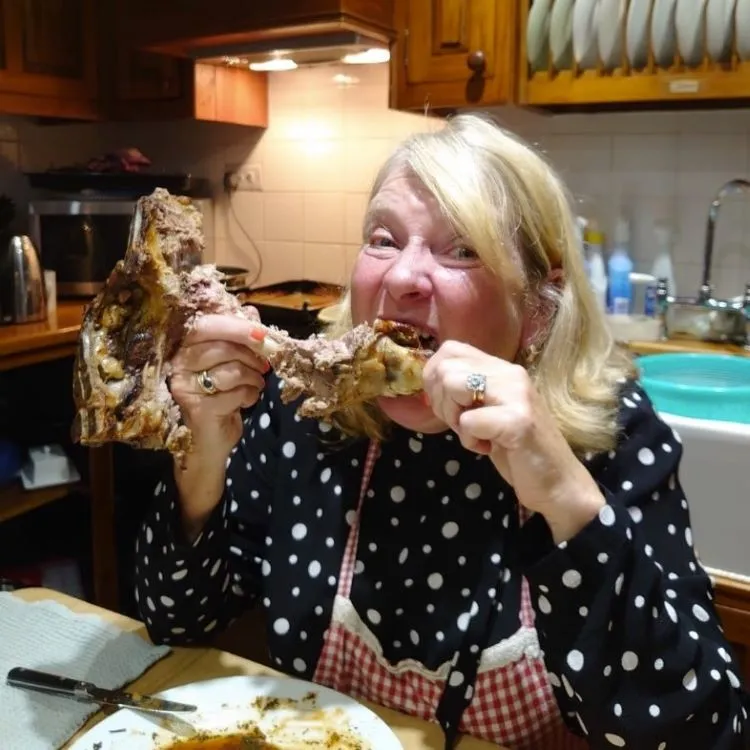
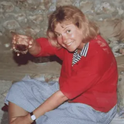
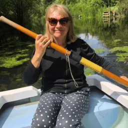

Who is Judith Holder?
BAFTA-nominated twice, a best-selling author, and the woman who had the idea for this podcast.
Before Judith started presenting Older and Wider with Jenny, she had a successful career as a broadcaster, producer and writer for ITV and the BBC.
She has worked with stars including Dame Edna Everage, Clive James and Joanna Lumley. She created "Grumpy Old Women", which became a stage show seen around the world.
She has been nominated for a BAFTA twice, she is a best-selling author, and the idea for this podcast was hers.

More of Judith
-

Raising a toast -
Relaxing on holiday -
With Mike at a wedding -

Messing about on a river